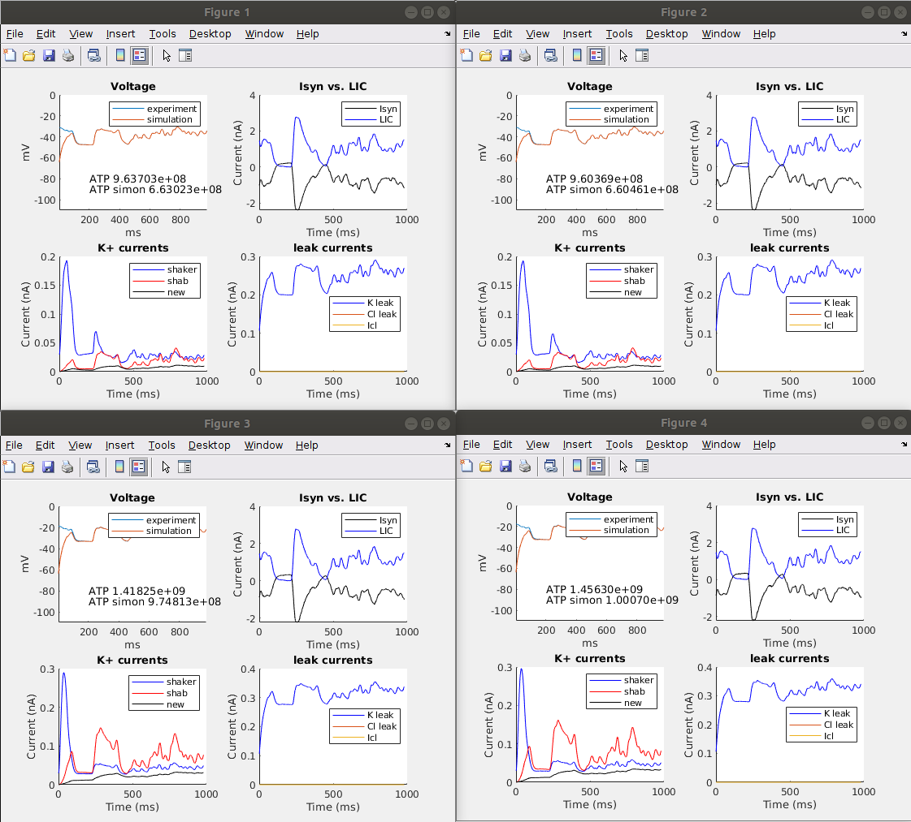
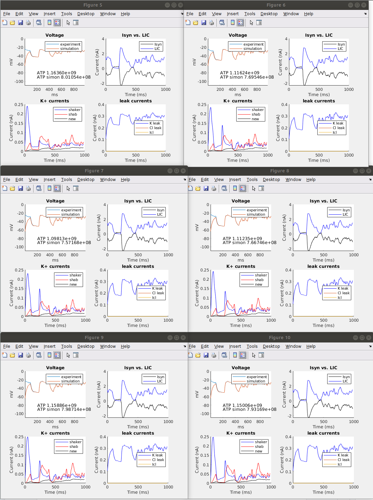

This is the readme for the models associated with the paper:
Li X, Abou Tayoun A, Song Z, Dau A, Rien D, Jaciuch D, Dongre S, Blanchard F, Nikolaev A, Zheng L, Bollepalli MK, Chu B, Hardie RC, Dolph PJ, Juusola M (2019) Ca2+-Activated K+ Channels Reduce Network Excitability, Improving Adaptability and Energetics for Transmitting and Perceiving Sensory Information. J Neurosci 39:7132-7154 http://dx.doi.org/10.1523/JNEUROSCI.3213-18.2019
This model entry was copied from the authors github repository on 20200328:
https://github.com/JuusolaLab/SK_Slo_Paper
and that should be checked for any updates. Zhuoyi Song and Mikko Juusola provided the file DynamicClampGoodIter.m.
Example run: ------------ Copy and pasting a few lines from the documentation at the top of DynamicClamp_Isyn_Cl.m onto the MATLAB command line: param = [-65 20 -57.1 0 -85 4*0.085e-3 0 0 -5 0 0.6*2.4e-3 0.6*5e-3 0.11e-3 ]; datasource = 'SKVol'; DynamicClamp_Isyn_Cl(datasource, param) in a minute or so yields the following images similar to those in Figure 7 of the paper: 